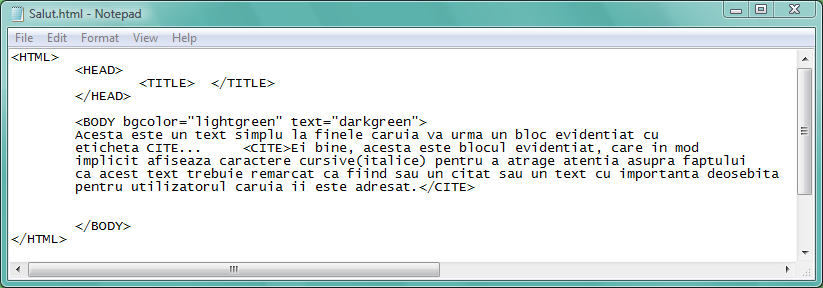
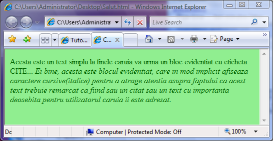
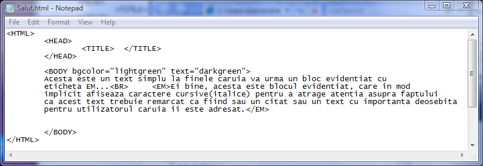

Blocuri de text evidentiate
Blocurile de text pot fi evidentiate prin scrierea cu caractere cursive, utilizand
sau perechea de etichete CITE respectiv /CITE, sau perechea EM respectiv /EM...
Iata un exemplu in care este utilizat un bloc CITE (citat):


Acelasi rezultat poate fi obtinut si cu etichetele EM (Emphasize=a evidentia) si respectiv /EM...
Iata mai jos codul sursa si pagina afisata de browser, folosind etichetele EM:


Prin urmare ambele etichete produc acelasi efect!!!
Inapoi la Blocuri de text